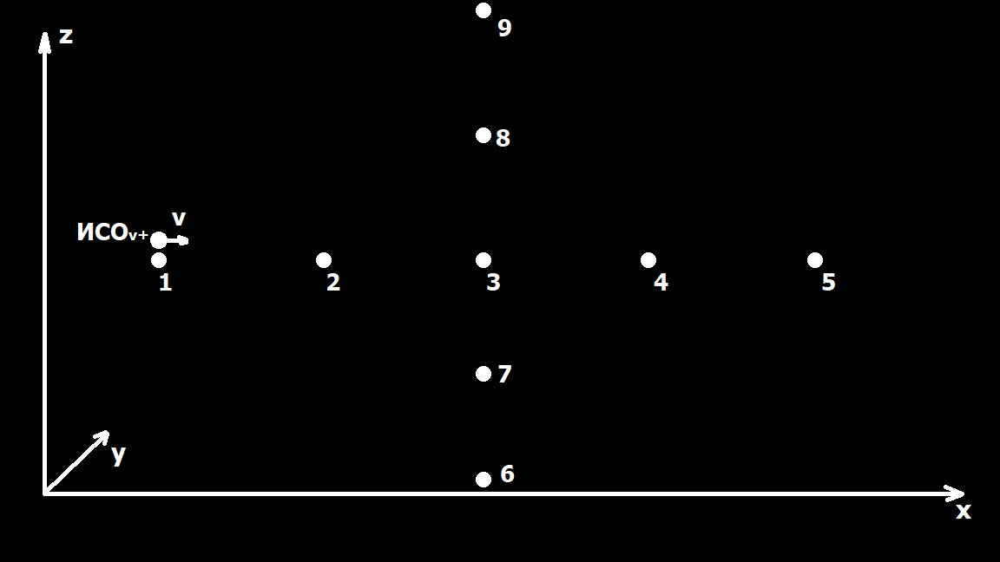
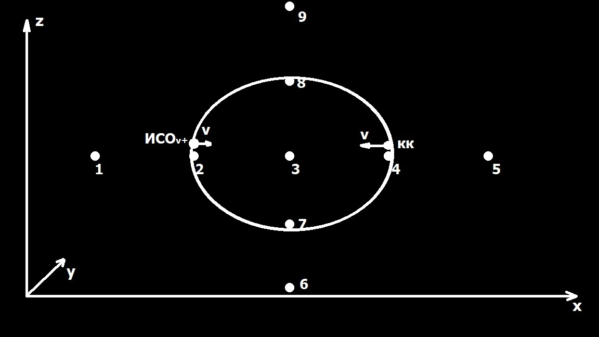
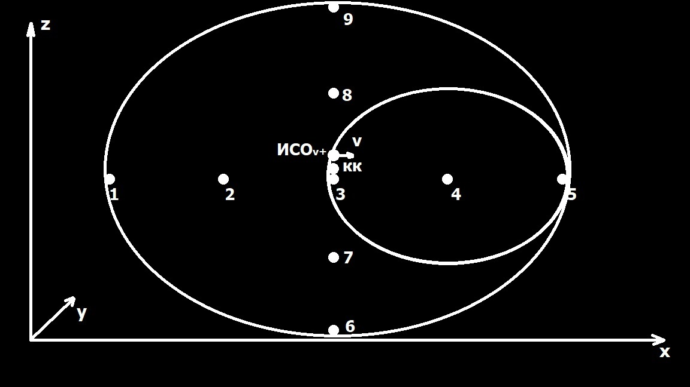
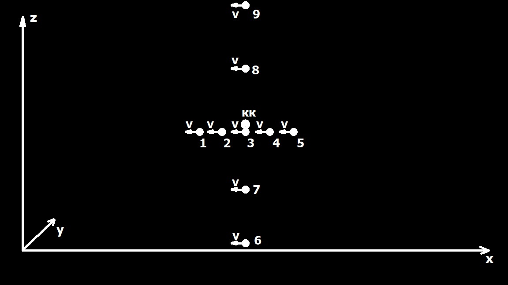
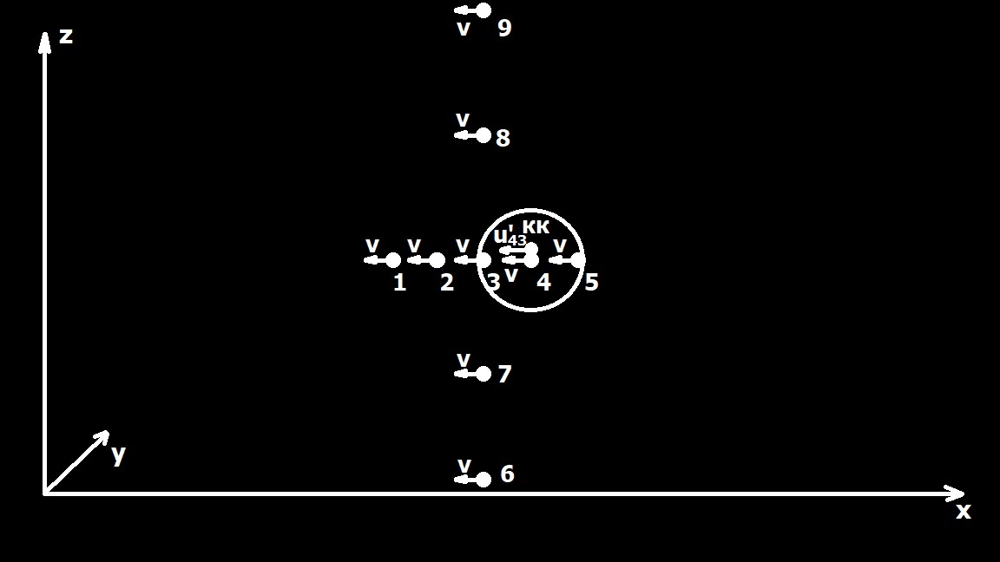
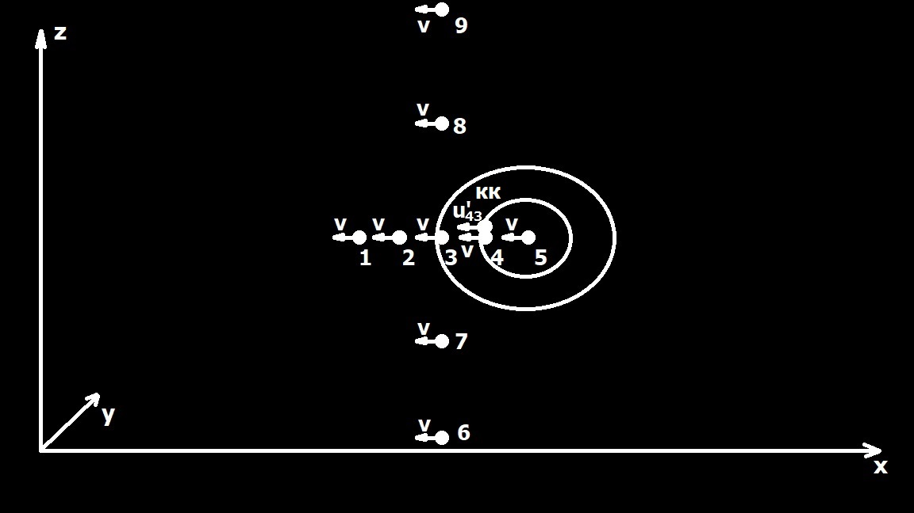
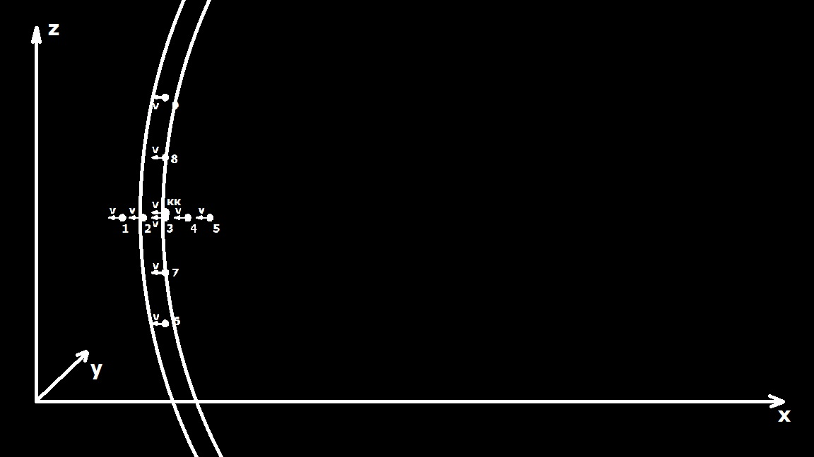
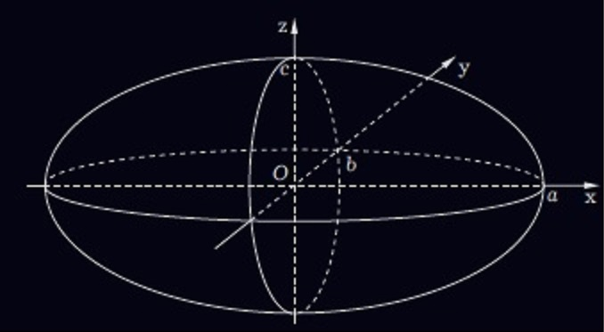
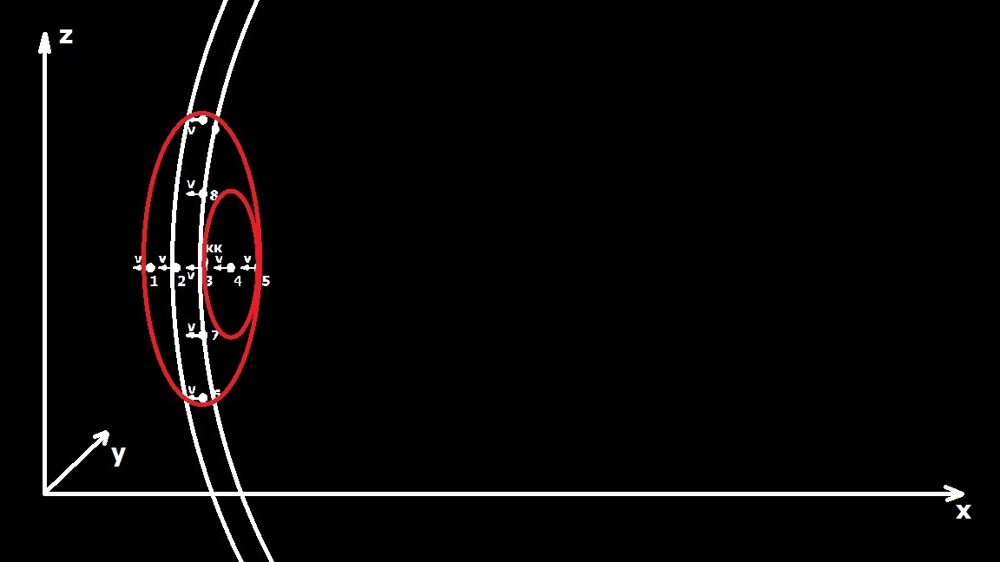
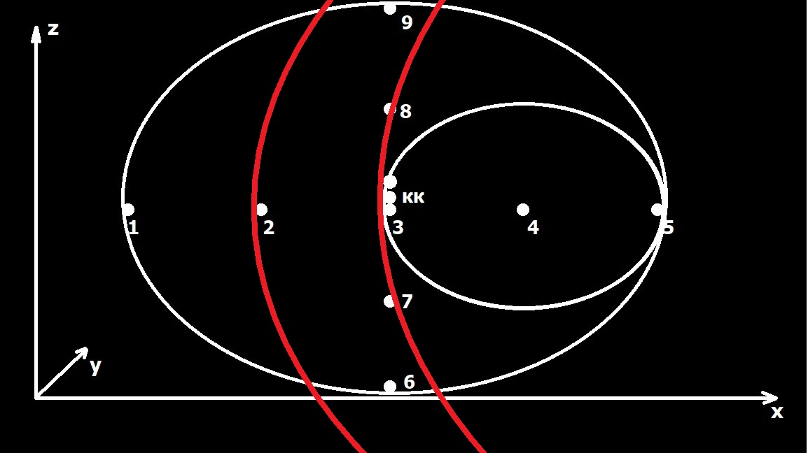

Неравноправие инерциальных систем отсчета вселенной
Аннотация¶
В работе приведены несколько типов новых продвинутых мысленных экспериментов рассмотренные в рамках специальной теории относительности и результаты их анализа.
Представлено описание мысленного эксперимента, в котором происходит движение объектов со скоростью стремящейся к бесконечности, что противоречит предельной скорости света согласно теории относительности.
Также описан другой мысленный эксперимент со вспышками света. Показано, что результирующая форма световых поверхностей, место излучения и размеры могут фундаментально отличаться для разных наблюдателей согласно теории относительности. Наблюдатели вместе следят за этими световыми поверхностями, находясь в конце мысленного эксперимента в одном и том же месте и моменте времени в общей инерциальной системе отсчета. Это противоречит всем реальным экспериментальным данным.
Полученные результаты доказывают, что разные инерциальные системы отсчета, двигающиеся относительно друг друга, неравноправны и не могут быть описаны общими законами.
Для устранения этих проблем предложена специальная инерциальная система отсчета, относительно которой можно проводить расчеты и получать результаты совпадающие с реальностью.
Введение¶
После того, как Эйнштейн сформулировал специальную теорию относительности (СТО) придумали мысленный эксперимент. В этом эксперименте не понятно какой объект испытывает замедление времени - парадокс близнецов [1,2,3,4,5,6,7]. Затем несколько ученых указали, что никакого парадокса нет. Они придумали ряд методов объясняющих происходящее в этом мысленном эксперименте [8,9,10,11,12,13]. Однако эти методы используют дополнительные средства, не относящиеся к специальной теории относительности. При этом сам мысленный эксперимент максимально упрощен и не показывает полноты проблемы использования теории относительности.
Если же рассматривать решения исключительно в рамках специальной теории относительности Эйнштейна, то они дают малое отклонение от реальности лишь для узкого спектра случаев в привилегированной системе отсчета и в целом неверны. Проведем несколько мысленных экспериментов чтобы это доказать.
Мысленные эксперименты доказывающие неравноправность инерциальных систем отсчета¶
Для дальнейшего описание необходимо ввести новое понятие.
Неподвижная система отсчета (НСО) - это инерциальная система отсчета (ИСО) связанная с объектом характеризующимся нулевым сдвигом реликтового излучения (нулевой дипольной анизотропией). НСО может быть связана с разными объектами, но их относительная скорость равна нулю. Необходимо особо отметить, что НСО отличается от системы отсчета связанной с Землей всего на несколько сот километров в секунду. Это основная причина по которой большинство вычислений согласно теории относительности близки к реальным результатам в экспериментах.
Коэффициент замедления времени или сжатия пространства:
\(F(v) = \sqrt{1 - \frac{v^2}{c^2}}\), (1)
где \(v\) это скорость объекта относительно ИСО или НСО.
Перерасчет скорости при смене ИСО:
\(\large{u_x' = \frac{u_x-v}{1-\frac{u_x v}{c^2}}}\), (2)
где \(v\) - скорость \(ИСО'\) относительно базовой ИСО, \(u_x\) - скорость объекта относительно базовой ИСО, \(u_x'\) - скорость объекта относительно \(ИСО'\).
Описание мысленного эксперимента 1:
Возьмем два космических корабля с синхронизированными часами (или две короткоживущие частицы полученные в одно и тоже время). Для простоты они двигаются только по одной оси координат - \(x\). Время затрачиваемое на ускорения считается пренебрежительно малым.
Пусть \(v\) - скорость космических кораблей относительно НСО (или с погрешностью относительно Земли).
- Начало. Они летят вместе. Пусть \(v=0\). Первый всегда покоится.
- Второй ускорим до скорости стремящейся к \(c\).
- Подождем значительное время \(0.5t\).
- Ускорим второй до скорости стремящейся к \(-c\).
- Подождем значительное время \(0.5t\).
- Ускорим второй до \(0\).
- Они летят вместе. Конец мысленного эксперимента.
Результаты в НСО используя формулу (1):
- космический корабль 1: \(t_1=F(0)(0.5t)+F(0)(0.5t)=0.5t+0.5t=t\);
- космический корабль 2: \(t_2=F(c)(0.5t)+F(-c)(0.5t)\to0\).
Пусть \(t\) равно миллиарду лет. В НСО ничего интересного не наблюдается и должно совпадать с результатами реальных экспериментов.
Теперь посмотрим, что же будет наблюдаться с точки зрения каждого из космических кораблей согласно теории относительности.
Результаты первого космического корабля будут идентичны результатам в НСО, так как система отсчета совпадает.
Для второго космического корабля изменение собственного времени зафиксированное на часах будет стремится к нулю (должно совпасть с результатами реальных экспериментов). Однако в структуре вселенной за это время будут зафиксированы колоссальные изменения. Объекты, скорость которых стремится к скорости света в НСО пройдут расстояние практически в миллиард световых лет. Это значит что их скорость относительно второго космического корабля должна была стремится к бесконечности (миллиард световых лет делим на время стремящееся к нулю). Однако это невозможно согласно теории относительности, так как предельная скорость должна быть равна скорости света.
Получаем противоречие:
- либо скорость объектов может стремиться к бесконечности с практически нулевым изменением времени на часах второго космического корабля. Это указывает на ошибочность теории относительности, но соответствует реальности.
- либо на часах второго космического корабля должно пройти столько же времени сколько и для первого космического корабля (миллиард лет), чтобы сохранить для объектов вселенной предельную скорость света. Это укладывается в концепцию теории относительности, но противоречит реальности.
Стоит отметить, что происходящее нельзя объяснить Лоренцевым сокращением длины хотя бы потому, что оно не влияет на плоскость перпендикулярную оси движения. Там объекты, скорость которых стремится к скорости света в НСО, пройдут расстояние практически в миллиард световых лет.
Фактически мы получаем, что вселенная изменилась на миллиард лет, но время для второго космического корабля практически не изменилось.
Это подтверждается экспериментальными данными, например, для короткоживущих частиц ускоренных до скоростей близких к скорости света. Фактически для этих случаев вселенная успевает изменяется на время на порядки превышающее собственное время жизни частицы (в НСО такие частицы распадаются на порядки быстрее). Конечно лоренц-фактор не такой высокий как в мысленном эксперименте, но это сугубо техническая проблема.
Рассмотрим ещё один мысленный эксперимент показывающий насколько велико может быть расхождение теории относительности с реальностью.
Описание мысленного эксперимента 2:
Возьмем несколько космических кораблей. Для простоты они двигаются только по одной оси координат - \(x\) и имеют нулевые координаты по осям \(y\) и \(z\). Все прочие объекты расположены в плоскости \(xz\). Время затрачиваемое на ускорения считается пренебрежительно малым.
Пусть ИСО связана с объектом 3 (\(ИСО_{o3}\)) на рисунке 1а.

Рисунок 1а – Объекты в \(ИСО_{o3}\)На рисунке 1а расстояния между объектами пространства выбраны следующим образом: \(l=l_{12}=l_{ИСО_{v+}2}=l_{23}=l_{34}=l_{45}=l_{67}=l_{73}=l_{38}=l_{89}\)
С объекта 3 стартует космический корабль по оси \(x\) и за время стремящееся к нулю приобретает вектор скорости \(v\).
Начало мысленного эксперимента. В этот момент космический корабль испускает импульс света. Затем движется время равное \(t\) по часам \(ИСО_{o3}\). \(l\) выбрано таким образом что \(l=vt\). Затем космический корабль ускоряется и за время стремящееся к нулю приобретает вектор скорости \(-v\).
Получаем картину представленную на рисунке 1б.

Рисунок 1б – Объекты в \(ИСО_{o3}\) спустя время \(t\)В этот момент космический корабль испускает импульс света. Затем движется время равное \(t\) по часам \(ИСО_{o3}\). Затем космический корабль ускоряется до скорости равной нулю за время стремящееся к нулю.
Конец мысленного эксперимента. Получаем картину представленную на рисунке 1в.

Рисунок 1в – Объекты в \(ИСО_{o3}\) спустя время \(2t\)Теперь посмотрим что же мы будем наблюдать относительно другой \(ИСО_{v+}\) связанной с другим космическим кораблем двигающимся с вектором скорости \(v\) относительно изначальной \(ИСО_{o3}\).
Ещё раз отметим, что космический корабль, \(ИСО_{o3}\) и \(ИСО_{v+}\) двигаются исключительно по одной оси \(x\) и имеют нулевые координаты по осям \(y\) и \(z\).
Для повышения качества понимания происходящего детализируем конкретное количественное описание. Пусть \(v=0.999c\). Тогда из-за сокращения Лоренца всё пространство по оси \(x\) сожмется.
Найдем коэффициент сжатия пространства по оси \(x\) по формуле (1):
\(F(v)=F(0.999c)\approx0.0447101778\)
То есть в \(ИСО_{v+}\): \(l'=l_{12}'=l_{23}'=l_{34}'=l_{45}'=F(0.999c)l\approx0.0447101778l\) и \(l=l_{67}'=l_{73}'=l_{38}'=l_{89}'\)
По формуле (2) вычислим скорости космического корабля на каждом этапе:
\(\large{u_{34}'=0}\); \(\large{u_{43}' = \frac{-v-v}{1+\frac{v^2}{c^2}}= \frac{-0.999c-0.999c}{1+\frac{{(0.999c)}^2}{c^2}}\approx-0.999999499c}\)
Время затраченное космическим кораблем на путешествие от объекта 3 до объекта 4 можно найти либо через коэффициент замедления времени по формуле (1):
\(\tau=F(v)t=F(0.999c)t\approx0.0447101778t\)
либо разделить расстояние на скорость в \(ИСО_{v+}\):
\(\tau=\frac{l'}{v}=\frac{F(v)l}{v}=\frac{F(v)vt}{v}=F(0.999c)t\approx0.0447101778t\)
На рисунке 2а показано, что должно наблюдаться в \(ИСО_{v+}\) в начале мысленного эксперимента согласно теории относительности.

Рисунок 2а – Объекты в \(ИСО_{v+}\) в начале мысленного эксперимента согласно теории относительностиНа рисунке 2б показано, что должно наблюдаться в \(ИСО_{v+}\) через время \(\tau\) после начала мысленного эксперимента согласно теории относительности.

Рисунок 2б – Объекты в \(ИСО_{v+}\) через время \(\tau\) после начала мысленного эксперимента согласно теории относительностиСогласно теории относительности распространение вспышки света в любой ИСО будет представлять из себя сферу определенного радиуса, так как согласно второму постулату в любой ИСО скорость света равна \(c\). При этом не важно с какой скоростью движется излучающий объект.
Давайте для наглядности посмотрим, что будет наблюдаться спустя еще один интервал времени \(\tau\). На рисунке 2в показано, что должно наблюдаться в \(ИСО_{v+}\) через время \(2\tau\) после начала мысленного эксперимента согласно теории относительности.

Рисунок 2в – Объекты в \(ИСО_{v+}\) через время \(2\tau\) после начала мысленного эксперимента согласно теории относительностиТеперь давайте рассчитаем, когда космический корабль долетит до объекта 3. Для этого нам нужно найти разность скоростей между космическим кораблем и объектом 3:
\(\Delta v=u_{43}'-v_{о3}\approx-0.999999499c+0.999c\approx-0.000999499c\)
Исходя из этого мы можем найти время путешествия космического корабля в \(ИСО_{v+}\) на втором этапе:
\(\large{t_{43}'=\left|\frac{l'}{\Delta v}\right|=\left|\frac{v\tau}{\Delta v}\right|\approx\frac{0.999c\tau}{-0.000999499c}\approx999.5\tau}\)
Затем космический корабль ускоряется до скорости равной \(-v\) за время стремящееся к нулю и будет двигаться вместе с объектом 3.
Конец мысленного эксперимента. Получаем картину представленную на рисунке 2г.

Рисунок 2г – Объекты в \(ИСО_{v+}\) через время \(1000.5\tau\) после начала мысленного эксперимента согласно теории относительностиПолучаем в \(ИСО_{v+}\) радиусы световых сфер:
\(R_{1v+}\approx1000.5\tau c\); \(R_{2v+}\approx999.5\tau c\)
При этом в \(ИСО_{o3}\) радиусы световых сфер:
\(R_{1o3}\approx2t c\approx44.733\tau c\); \(R_{2o3}\approx t c\approx22.366\tau c\)
Для того чтобы сравнить результаты необходимо либо ускорить объект с которым была связана \(ИСО_{o3}\) до скорости \(ИСО_{v+}\), либо ускорить объект с которым была связана \(ИСО_{v+}\) до скорости \(ИСО_{o3}\). Тогда наблюдатели будут в одном и том же месте и времени в одной и той же ИСО.
Ускорив объект с которым была связана \(ИСО_{o3}\) до скорости \(ИСО_{v+}\) за время стремящееся к нулю. Получим, что необходимо учесть сокращение Лоренца. Все пространство включая световые сферы сожмётся по оси \(x\). Коэффициент сжатия \(F(v)=F(0.999c)\approx0.0447101778\). В результате мы получим эллипсоиды, которые аналогичны представленному на рисунке 3.

Рисунок 3 – ЭллипсоидПараметры поверхности светового эллипсоида для первой световой вспышки в \(ИСО_{v+}\):
\(b=c=R_{1o3}\approx44.733\tau c\); \(a=0.0447101778R_{1o3}\approx2\tau c\)
Параметры поверхности светового эллипсоида для второй световой вспышки в \(ИСО_{v+}\):
\(b=c=R_{2o3}\approx22.366\tau c\); \(a=0.0447101778R_{2o3}\approx\tau c\)
На рисунке 4а показаны белыми кривыми световые сферы согласно расчетам наблюдателя в \(ИСО_{v+}\), а красными - световые эллипсоиды с точки зрения наблюдателя на космическом корабле с которым была связана \(ИСО_{o3}\) до окончания мысленного эксперимента (после окончания мысленного эксперимента ускорили этот космический корабль до скорости \(ИСО_{v+}\) за время стремящееся к нулю).

Рисунок 4а – Объекты в \(ИСО_{v+}\) через время \(1000.5\tau\) после начала мысленного эксперимента согласно теории относительности для разных наблюдателейУскорив объект с которым была связана \(ИСО_{v+}\) до скорости \(ИСО_{o3}\) за время стремящееся к нулю. Получим, что необходимо учесть сокращение Лоренца. Все пространство включая световые сферы разожмется по оси \(x\). Коэффициент растяжения \(1/F(v)=1/F(0.999c)\approx22.366\). В результате мы получим эллипсоиды, которые аналогичны представленному на рисунке 3.
Параметры поверхности светового эллипсоида для первой световой вспышки в \(ИСО_{o3}\):
\(b=c=R_{1v+}\approx1000.5\tau c\); \(a=22.366R_{1v+}\approx22377\tau c\)
Параметры поверхности светового эллипсоида для второй световой вспышки в \(ИСО_{o3}\):
\(b=c=R_{2v+}\approx999.5\tau c\); \(a=22.366R_{2v+}\approx22355\tau c\)
На рисунке 4б показаны белыми кривыми световые сферы согласно расчетам наблюдателя в \(ИСО_{o3}\), а красными - световые эллипсоиды с точки зрения наблюдателя на космическом корабле с которым была связана \(ИСО_{v+}\) до окончания мысленного эксперимента (после окончания мысленного эксперимента ускорили этот космический корабль до скорости \(ИСО_{o3}\) за время стремящееся к нулю).

Рисунок 4б – Объекты в \(ИСО_{o3}\) через время \(2t\) после начала мысленного эксперимента согласно теории относительности для разных наблюдателейПолучается, что в какой бы ИСО мы не находились, один наблюдатель скажет что мы будем видеть сферы, а другой наблюдатель скажет что мы будем видеть эллипсоиды. Как видим параметры сфер и эллипсоидов наблюдаемые разными наблюдателями абсолютно разные в конкретном месте и времени в конкретной ИСО. Более того их центры также имеют разное расположение в пространстве. При этом во всех имеющихся реальных экспериментах наблюдатели всегда видят одно и тоже, если находятся в одном и том же месте и времени в одной и той же ИСО - объективная реальность.
Для повышения качества понимания происходящего предположим, что все пространство наполнено мелкой пылью неподвижной в \(ИСО_{o3}\). Тогда становится понятно, что вспышки света достигнут все пылинки в зоне рассчитанных ранее сфер и эллипсоидов. Получается что согласно теории относительности разные наблюдатели после их перехода в одну общую ИСО будут фиксировать разные области пространства с пылью, которая была подсвечена. Это противоречит реальности, так как по факту наблюдатели зафиксируют одну и ту же картину для них обоих.
Необходимо сказать, что для любых других ИСО, движущихся относительно друг друга, проблема будет сохраняться. Отличие будет только в степени разницы между сферами и эллипсоидами.
Исходя из того, что любые составные объекты движутся медленнее скорости света, то они обязаны согласно теории относительности находиться внутри описанных выше сфер и эллипсоидов, если были запущены с того же космического корабля не ранее момента вспышки света. Это дополнительно указывает на несоответствие теории относительности и реальности.
Есть ещё один вариант объяснения результатов полученных разными наблюдателями. Можно предположить, что при переходе наблюдателя из одной инерциальной системы отсчета в другую все объекты меняют соответственно свое местоположение и состояние в пространстве. Например, если взять наблюдателя из \(ИСО_{o3}\) и ускорить его за время стремящееся к нулю до скорости \(v\), то он перейдет в \(ИСО_{v+}\). При этом состояние объектов сменится с картины представленной на рисунке 1в на картину представленную на рисунке 2г. Фактически произойдет телепортация объектов и их состояний. Переход наблюдателя из \(ИСО_{v+}\) в \(ИСО_{o3}\) аналогичен - картина рисунка 2г сменится на картину рисунка 1в.
Это хорошее объяснение, но и здесь есть фундаментальная проблема. Для того чтобы наглядно показать эту проблему добавим деталь в данный мысленный эксперимент. При попадании света на объект 1 он ускоряется до скорости \(v\) за время стремящееся к нулю и переходит из \(ИСО_{o3}\) в \(ИСО_{v+}\). Получается, что в \(ИСО_{o3}\) световой импульс попадет на объект 1 ещё до того как космический корабль вернется обратно к объекту 3 (до конца мысленного эксперимента). После этого объект 1 ускоряется до скорости \(v\) за время стремящееся к нулю и переходит из \(ИСО_{o3}\) в \(ИСО_{v+}\). И мы должны увидеть картину, которая будет раньше чем картина представленная на рисунке 2г. А значит в этой ИСО световой импульс ещё не попал на объект 1 и он не мог ускорится и перейти в \(ИСО_{v+}\). Получаем парадоксальное поведение невозможное в реальности.
В итоге мы получили результаты доказывающие, что разные ИСО неравноправны и не могут быть описаны общими законами, концепция относительности ошибочна и наша вселенная абсолютна. Также необходимо ещё раз особо отметить, что причина хорошего соответствия теории относительности экспериментальным данным в том, что НСО отличается от системы отсчета связанной с Землей всего на несколько сот километров в секунду и это дает минимальную погрешность.
Заключение¶
Теория относительности Эйнштейна не использует и не дает понимание об абсолютных характеристиках, а именно, о начальных скоростях исследуемой пары объектов. Кроме того, также не дает понимания о том происходит ускорение или торможение объекта, так как в ней важны лишь относительные скорости и ускорения между объектами. В этом вся суть этой теории. И именно эта концепция относительности делает теорию относительности ошибочной в общем случае.
Безусловно требует тщательной проверки предположение о том, что именно НСО является инерциальной системой отсчета относительно которой корректно рассчитывать все во вселенной. Однако исходя из анализа вышеописанных мысленных экспериментов можно утверждать, что теория относительности Эйнштейна и концепция относительности вселенной ошибочны, так как в широком спектре случаев не позволяют корректно описывать поведение объектов вселенной качественно и количественно.
Также полученные результаты доказывают, что различные ИСО неравноправны и не могут быть описаны общими законами. Это приводит к пониманию абсолютности структуры вселенной. Фактически предполагается, что НСО является покоящейся в рамках концепции абсолютной вселенной. Это основа для построения концепции абсолютной вселенной. Исходя из этого именно скорость относительно НСО является ключевым параметром определяющим сколько времени будут показывать часы.
Список литературы¶
- Einstein, A.: On the electrodynamics of moving bodies. Annalen der Physik 322(10), 891–921 (1905) https://doi.org/10.1002/andp.19053221004.
- Einstein, A.: Die relativit¨ats-theorie. Vierteljahrsschrift der Naturforschenden Gesellschaft in Z¨urich 56, 1–14 (1911).
- Resnick, R.: Supplementary Topic B: The Twin Paradox, pp. 201–209. John Wiley and Sons, Inc., New York (1968).
- Crowell, B.: The Twin Paradox, pp. 23–24. Light and Matter, Fullerton, California (2000).
- Serway, R.A., Moses, C.J., Moyer, C.A.: Modern Physics, pp. 21–22. Thomson Learning, Inc., 10 Davis Drive Belmont, CA 94002 (2004).
- D’Auria, R., Trigiante, M.: From Special Relativity to Feynman Diagrams: A Course of Theoretical Particle Physics for Beginners, pp. 541–544. Springer, Switzerland (2011). https://doi.org/10.1007/978-3-319-22014-7.
- Ohanian, H.C., Ruffini, R.: Gravitation and Spacetime. Cambridge University Press, 32 Avenue of the Americans, New York (2013). https://doi.org/10.1017/CBO9781139003391.
- Hawley, J.F., Holcomb, K.A.: Foundations of Modern Cosmology, pp. 203–205. Oxford University Press, Great Clarendon St, Oxford (2005).
- Laue, M.: The principle of relativity. Yearbooks of Philosophy 1, 99–128 (1913).
- Einstein, A.: Dialog about objections against the theory of relativity. Die Naturwissenschaften 48, 697–702 (1918).
- Ohanian, H.: Special Relativity: a Modern Introduction. Physics Curriculum and Instruction, Lakeville, MN (2001).
- Harris, R.: Modern Physics. Pearson Addison-Wesley, San Francisco, CA (2008).
- Rindler, W.: Introduction to Special Relativity. Oxford University Press, Oxford, UK (1982).